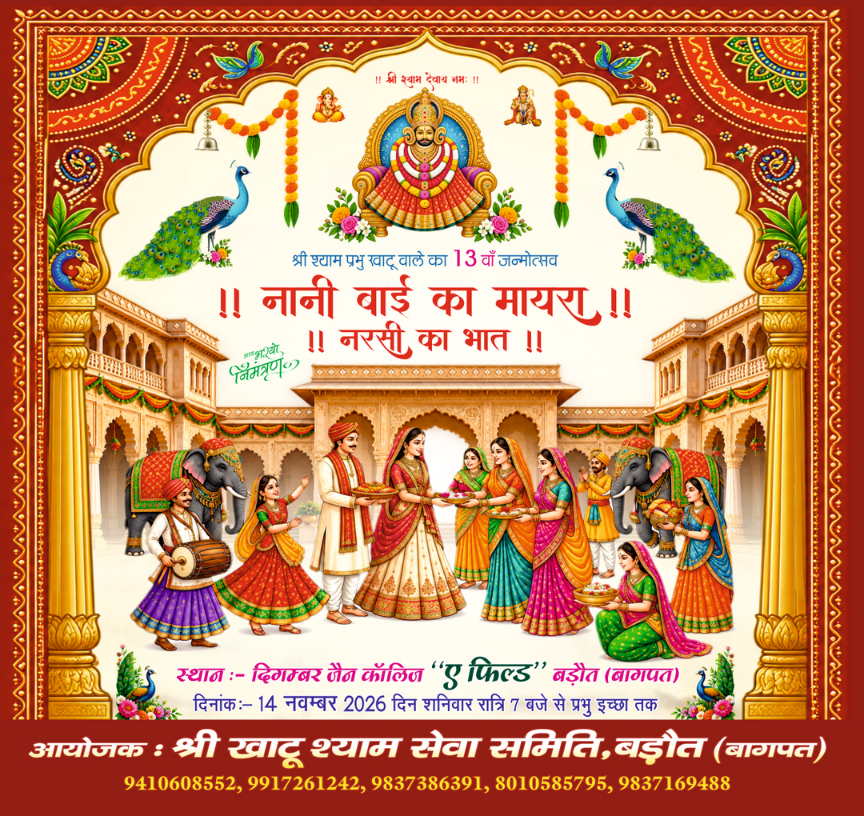
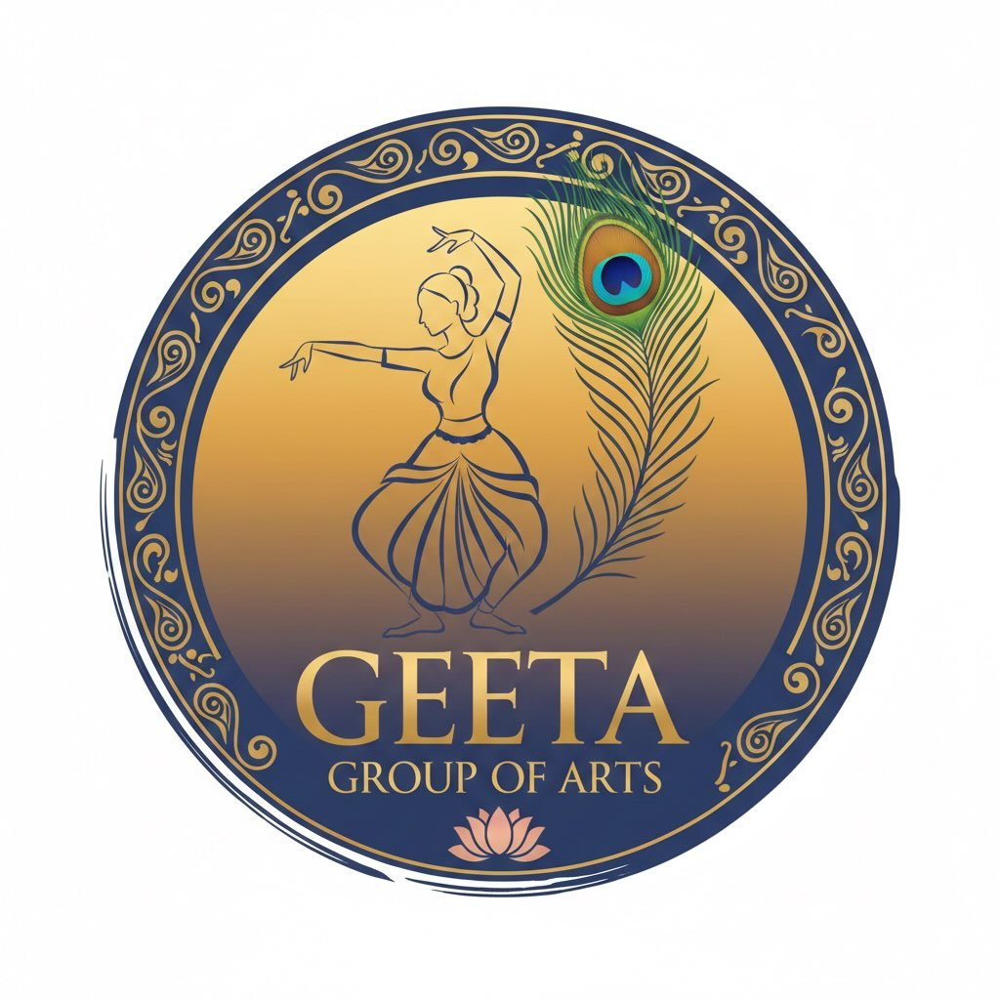

श्री खाटू श्याम सेवा समिति, बड़ौत
नानी बाई का मायरा
॥ नरसी का भात ॥
भक्ति, प्रेम और श्रद्धा से परिपूर्ण एक दिव्य धार्मिक नृत्य-नाटिका
▶ नाटिका देखेंएक दिव्य आयोजन
कार्यक्रम की विशेष झलक

भक्ति और भाव का संगम
नानी बाई का मायरा — सजीव मंचन
नरसी भगत की अटूट श्रद्धा और श्रीकृष्ण की कृपा पर आधारित भावपूर्ण धार्मिक प्रस्तुति।
नानी बाई का मायरा
॥ नरसी का भात ॥

Geeta Group of Art, Mumbai
गीता ग्रुप ऑफ आर्ट, मुंबई
नानी बाई का मायरा — नरसी का भात
भक्ति, संगीत, अभिनय और भावपूर्ण मंचन के माध्यम से धार्मिक प्रसंगों को दर्शकों तक पहुँचाने वाली इस विशेष नृत्य-नाटिका में श्रीकृष्ण की कृपा, नरसी भगत की श्रद्धा और भक्ति की महिमा का सजीव चित्रण प्रस्तुत किया जाएगा।
भजन संध्या की विशेष प्रस्तुति
भक्ति स्वर
वैष्णवी गुप्ता
दिल्ली
बाबा श्याम के भजनों और भक्ति-रस से संध्या को मंगलमय बनाने वाली विशेष प्रस्तुति।
॥ जय श्री श्याम ॥पधारिए, भक्ति के इस पावन उत्सव में
श्री खाटू श्याम सेवा समिति, बड़ौत की ओर से आप सभी भक्तजनों का हार्दिक स्वागत एवं अभिनंदन।
॥ जय श्री श्याम ॥